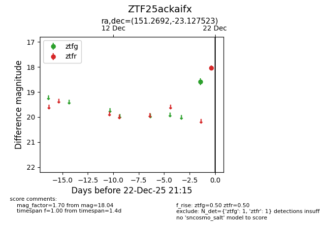
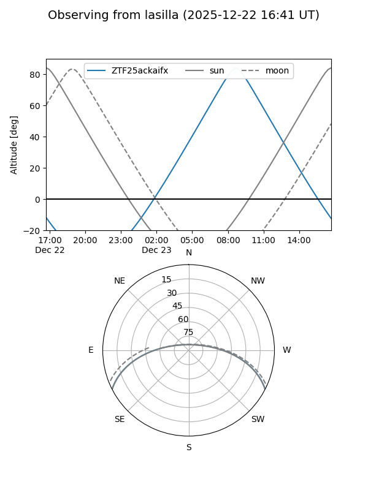
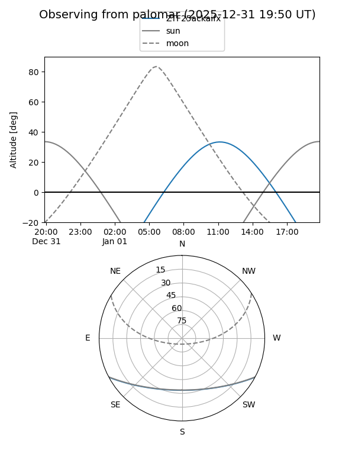

ZTF25ackaifx
Target ZTF25ackaifx at 2025-12-31 18:00
Aliases and brokers:
FINK: link
Lasair: link
ALeRCE: link
alt names
ZTF25ackaifx (ztf,fink_ztf)
Coordinates:
equatorial (ra, dec) = 151.2692,-23.12752
equatorial (HMS+DMS) = 10:05:04.60,-23:07:39.08
galactic (l, b) = (260.3033,+25.66036)
Flags:
Photometry:
last ztfg=18.58, ztfr=18.04
1 ztfg, 1 ztfr detections
Lightcurve

Visibility


Additional plots